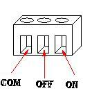
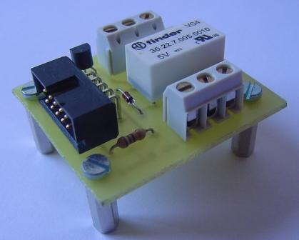

|
|

| Clema control carga (Clema 1 y 2) |
 |
|
Tarjeta Freerele 1.0 |
|
 |
Tarjeta control de potencia con 1 relé, y conector para cable de tipo bus. Se conecta directamente a los puertos de la tarjeta Skypic. Se ha desarrollado para poder activar o desactivar dispositivos de potencia.
1 relé
Dimensiones: 43 x 37 mm
Placa a simple cara
Conexión a través de un cable plano de tipo bus de 10 hilos y dos clemas.
Hardware Libre
Plataforma de desarrollo: máquina con Windows 2000
Diseñada con Eagle v4.09r2
Los motivos principales por lo que he diseñado esta placa son:
Aumentar la capacidad de control que nos ofrece la placa Opto-triac pudiendo con esta, manejar cualquier dispositivo que únicamente requiera de dos estados encendido o apagado.
Añadir una nueva placa para el proyecto de automatización doméstico.
Una posible aplicación es conectándola al puerto B de la SkyPic poder encender y apagar un dispositivo conectado a la red electrica, a diferencia de la tarjeta Opto-triac con esta placa podremos manejar cualquier tipo de aparato.
La freerele dispone de un conector acodado de 10 pines y dos clemas triples para manejar los dispositivos externos. En la siguientes tablas y figuras se muestran la asignación de los pines.
|
|
| Clema control carga (Clema 1 y 2) |
 |
|
Tarjeta freerele |
|
Esquemático en formato PDF | |
|
PCB. Cara del cobre. En formato PDF | |
|
Serigrafías. Cara de los componetes. Formato PDF | |
|
Planos de la freerele para Eagle |
La tarjeta freeerele esta publicada bajo la licencia Creative Commons en la versión Attribution and Share Alike. Es decir se permite copiar, modificar y distribuir este material siempre que se reconozca al autor y se mantenga la misma licencia.
06/Febrero/2006: Publicada primera versión de esta página